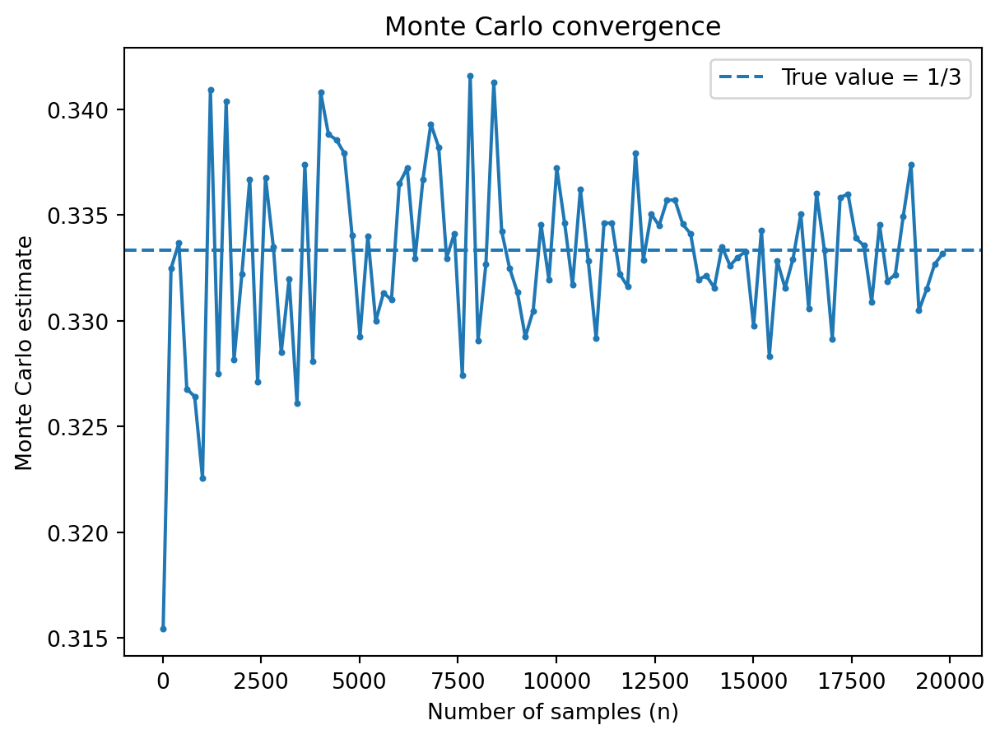
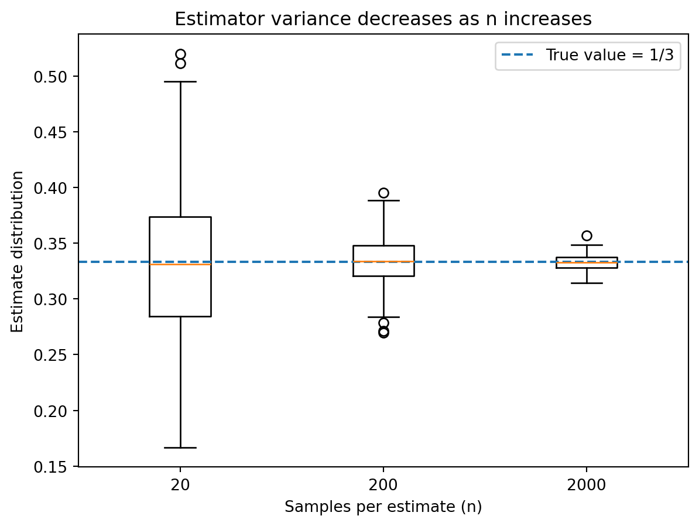

Data Science in Animation
Data Science in Animation
Statistical Methods Behind Animation
This presentation was prepared by Ryan Jiang.
Introduction
Why Study Animation Through Statistics?
Modern animation is not simply digital drawing; it is the result of large-scale statistical estimation and computational modeling.
Behind every realistic animated film are mathematical models that simulate light transport, physical motion, and learned patterns from data.
Although audiences see characters and stories, what powers those visuals are integrals, optimization problems, and probabilistic algorithms.
Mathematical Foundation
The Rendering Equation
- The rendering equation models how light leaves a surface by combining emitted light and reflected incoming light.
\[ L_o(x, \omega_o) = L_e(x, \omega_o) + \int_{\Omega} f_r(x, \omega_i, \omega_o) L_i(x, \omega_i) (\omega_i \cdot n) d\omega_i \]
This equation conceptually says that outgoing light equals emitted light plus reflected incoming light.
The integral term means we are summing contributions from all possible incoming directions.
Because it is recursive and high-dimensional, it cannot be solved analytically for complex scenes since light bounces multiple times.
Computational Challenge
Why exact solutions are infeasible
Real scenes involve many light bounces, and each bounce adds more complexity because light transport is recursive.
Because of this recursion and the dimensionality of the integral, exact analytical solutions are impossible for complex environments.
Because of this, studios rarely compute exact solutions and instead rely on estimation.
Statistical Solution
Monte Carlo estimation in rendering
Monte Carlo methods approximate integrals by sampling random directions and averaging the results.
In rendering, this becomes an estimator of outgoing radiance based on randomly sampled light paths.
By the Law of Large Numbers, this estimator converges as sample size increases. However, finite sampling introduces variance — and in animation, that variance appears visually as noise..
Monte Carlo convergence (integral estimation)
This demo estimates (_0^1 x^2,dx = 1/3), illustrating how random sampling approximates an integral.
As shown, when the sample size is small, the estimate fluctuates but as the sample size increases, the estimate stabilizes around the true value.
This is exactly what happens in rendering: more samples per pixel reduce variability and produce smoother images.
Variance reduction and noise analogy
This boxplot shows how estimator variability shrinks as sample size increases.

As shown on the plot, with only 20 samples, the estimates vary widely, but as samples increase, the distribution tightens around the true value of 1/3.
This shrinking spread represents decreasing variance, which in animation, corresponds to less visual noise.
Physics-Based Simulation
Modeling motion and natural phenomena
- To animate cloth, hair, water, and smoke realistically, studios solve systems of differential equations numerically, like Newton’s second law:
[ F = m a ]
Acceleration is computed from forces such as gravity, tension, collision, and air resistance.
These continuous equations are approximated numerically using time-stepping algorithms.
If velocity changes over time, we approximate position updates using:
[ x_{t+1} = x_t + v_t t ]
Small time steps increase accuracy but increase computational cost.
Large time steps reduce cost but increase numerical error.
Numerical methods introduce discretization error, so step size and computational cost must be balanced.
Some systems incorporate randomness to simulate chaotic effects such as:
- Smoke
- Fire
- Debris
- Particle systems
Random forces are often drawn from probability distributions to mimic natural variation.
Optimization at Scale
Efficiency as a constrained problem
Rendering a single film may require millions of CPU hours.
Studios frame rendering as an optimization problem, minimizing variance subject to time and hardware constraints.
Techniques such as importance sampling and adaptive sampling allocate computational effort efficiently.
Machine Learning in Animation
Learning motion from data
Motion capture produces high-dimensional time series data that often contain noise and missing measurements.
Each frame of motion capture contains dozens of joint positions.
Over time, this produces high-dimensional time series data.
Noise, missing markers, and sensor errors require statistical smoothing.
Neural networks are trained to smooth motion and predict realistic joint trajectories.
Machine learning models predict future joint positions using regression:
[ = f_(x) ]
Where parameters ( ) are learned by minimizing a loss function.
Training involves minimizing a loss function through gradient-based optimization.
Generative AI
Diffusion models
Diffusion models generate images by learning to reverse a gradual noising process.
These systems approximate high-dimensional probability distributions over images.
They enable AI-assisted animation tools, frame interpolation, and visual synthesis.
Conclusion
Animation as Applied Data Science
Modern animation represents a collaboration between artists, engineers, statisticians, and data scientists.
What appears on screen is the result of probabilistic modeling, optimization, and computational simulation.
In this sense, digital storytelling is fundamentally powered by statistical methods.
Works Cited
Kajiya, J. (1986). The Rendering Equation. SIGGRAPH.
https://dl.acm.org/doi/10.1145/15922.15902
This foundational paper introduced the rendering equation, which models light transport in computer graphics.
Pharr, M., Jakob, W., & Humphreys, G. (2023). Physically Based Rendering: From Theory to Implementation. MIT Press.
https://pbr-book.org/
This book provides a comprehensive explanation of Monte Carlo rendering techniques used in modern animation.
Akenine-Möller, T., Haines, E., & Hoffman, N. (2018). Real-Time Rendering, Fourth Edition. AK Peters/CRC Press. https://www.realtimerendering.com/ This resource offers in-depth coverage of rendering algorithms, sampling techniques, and performance-oriented graphics methods relevant to animation.
Goodfellow, I., Bengio, Y., & Courville, A. (2016). Deep Learning. MIT Press.
https://www.deeplearningbook.org/
This foundational book explains neural networks and optimization methods used in motion modeling and AI-driven animation.
Rombach, R., et al. (2022). High-Resolution Image Synthesis with Latent Diffusion Models. CVPR.
https://arxiv.org/abs/2112.10752
This paper introduces diffusion-based generative models used in modern AI-assisted animation tools.